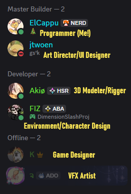
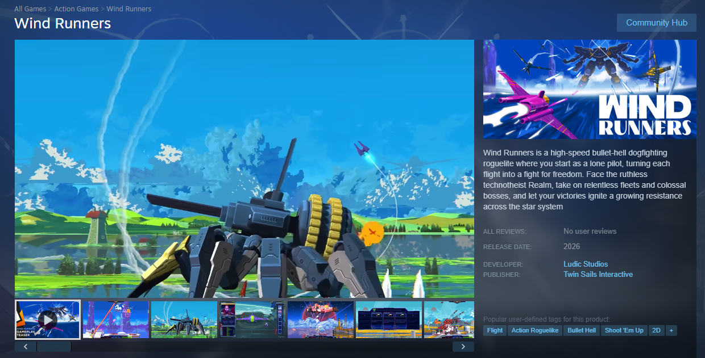
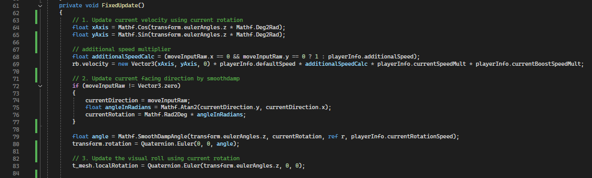
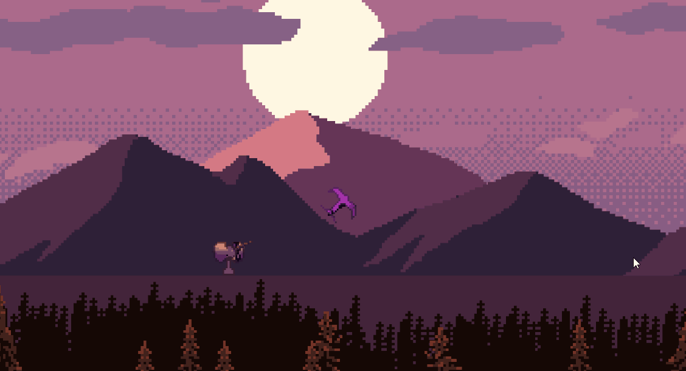
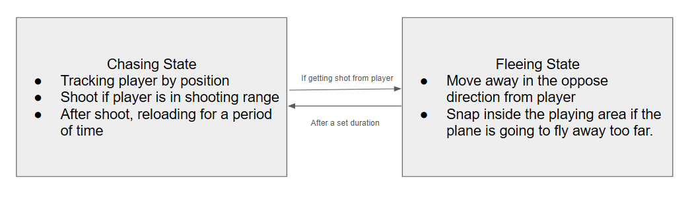
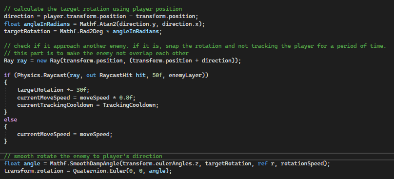
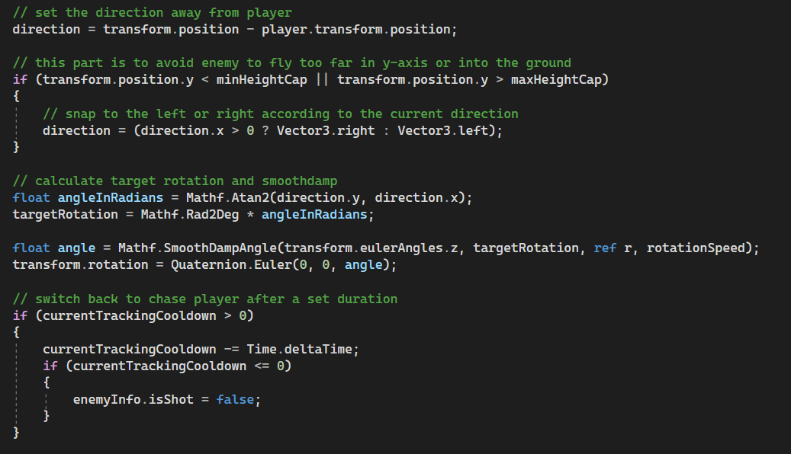
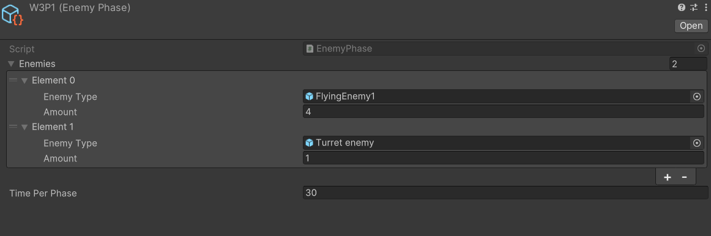
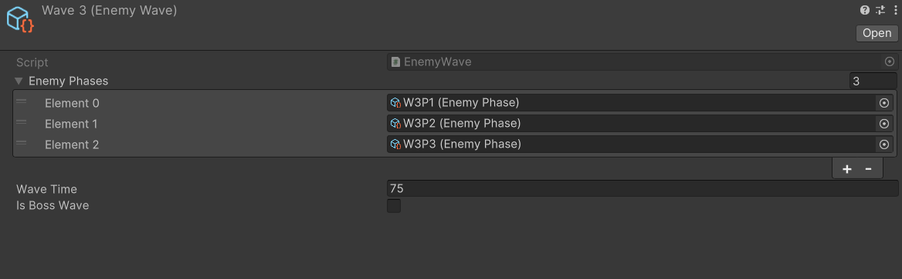
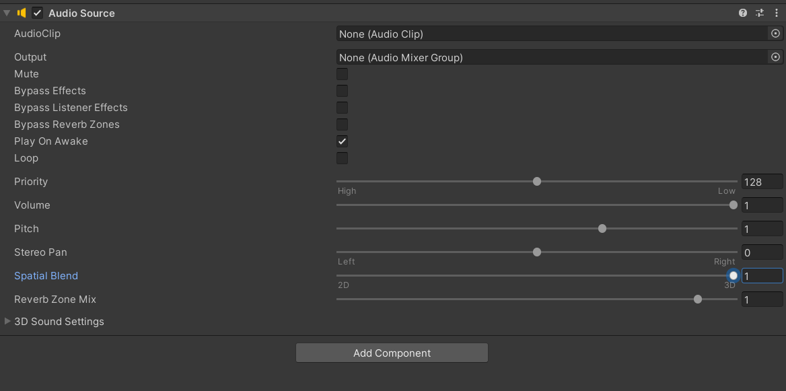

This is the work that I made while attended in university's game jam. I teamed up with my group of friends that I'd never working with before. it is such a long time I changed the group so the feeling is fresh and new.

There is no specific theme. The only limitation is the time period of 1 mounth before the semester started. We had not much idea in mind, so we choose to do the simple rogue-like arcade aerial shooting game. Player will play as a plane, dodge the bullet, and shoot the enemy while controlling the aerial movement.

Huge inspiration from Wind Runners
I need to write the movement that simulate the plane when turning left and right. Because the perspective is side-scroll 2D, the control is also 2D. The plane needs to slowly tilted while turn to the target rotation.
So the movement process is
1. Update the velocity using the current facing direction
2. Update the facing direction by smoothdamp the current facing direction and current input direction.
3. Update the visual roll using current rotation

The "Update visual roll" part is very important because it makes the plane movement looks more smooth and similar to most aerial games

To make the enemy movement and chasing smooth, I designed enemy state to swap between each state smoothly.
For your information, this code was made before I had learned about finite state machine, so the state is written in a straightforward for loop. Please bear with it.



Other enemy types such as ground enemy and boss has a similar behavior without flee state.
In this game, enemy waves have two levels: main waves and sub waves. Sub waves spawn groups of enemies repeatedly after a set amount of time. Each main wave contains multiple sub waves. When all sub waves in a main wave are completed, the player receives an upgrade.
I used scriptable object to store the wave information. it is easier for designer to configurate and balancing.


In this project, I tried using FMOD for surrounding sounds because I found some tutorials on it and thought that it might be good to learn new stuff.
it quite harder to do it and use huge amount of time to learn to make the sound surrounding.
Also, turns out that I can easily use the Unity audio source's spatial blend to make it surround in 2D. It was quite over-engineer.

but If the next time I want to use the feature that offers in FMOD such as sound mixing or editing, I will try to use it again.
As the only programmer on the team, I was responsible for developing every gameplay feature in this project. This gave me a valuable opportunity to learn all aspects of game development. From implementing core mechanics to solving more complex challenges without relying on tutorials, such as creating the smooth plane’s movement system and building a flexible enemy wave data configurator for designer.
Besides the technical side, this project taught me how crucial communication and scoping are in a small period of time. With a short development timeline, minor miscommunication could cause significant setbacks. I also gained experience working with the art team and teach them how to export the assets properly for unity.